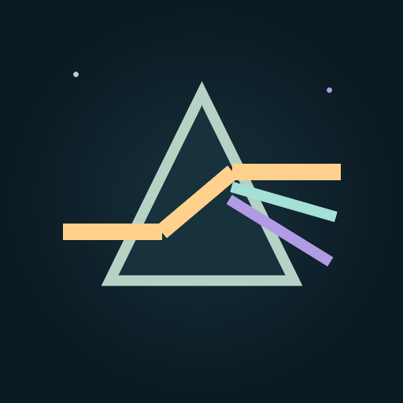

LUMEN
Compose light in space and time.
A tactile collection of light experiences: release finite pulses through evolving optical chambers, steer a living beam through an endless stream, or build luminous art in a studio of mirrors, lenses, prisms and mathematical forms.
One optical language. Three ways to play.
Lumen turns the same geometric-light foundation into deliberate puzzles, responsive arcade motion and an expressive creative instrument. Every visual field is rendered from code and every mode is designed to work without an account or content server.
Play with light, not around it.
Each mode is complete on its own, while sharing Lumen's calm, tactile presentation and local progression.
Fourteen authored chambers about position, capture, split paths, optical delay, ordered activation, selective darkness and synchronized arrivals.
Guide a continuously advancing beam through lenses, water, gates and reflective rails in Flow, Pulse or Overdrive pace.
Journey, Daily Refraction, Flux and the earlier Optics Lab remain available with their own progress and experiments.
Freeze a travelling pulse, rearrange the room, charge vessels and release stored light when another branch is ready.
Photon Drift moves through Astral ocean or Neon megacity scenery with original synthesized music and effects.
Unlock visual styles and limited assists using prisms earned through play. They cannot be bought or converted to money.
A light studio, not a level editor.
Place up to three sources, mirrors, lenses, prisms, water, droplets, splitters and walls. Switch from physical rays to kaleidoscope, fractal bloom or Koch crystal art, then save an editable composition or export a clean PNG through Android's system document picker.
Private by construction.
The current build keeps the experience self-contained.
Progress, best scores, compositions, settings and unlocks remain in Android app storage.
No advertising, analytics, crash-reporting, social-login, cloud-save or payment SDK is included.
Lumen sees only the location you choose in Android's document picker when you export a PNG.
Legal & support
Public copies synchronized with the legal centre inside Lumen.
Local saves, PNG exports, permissions and Google Play updates.
→Terms of UseLicence, local data, optical model, prisms, updates and limitations.
→SupportTroubleshooting, exports, progress and update help.
→Copyright & LicencesOriginal visuals and audio, ownership and third-party components.